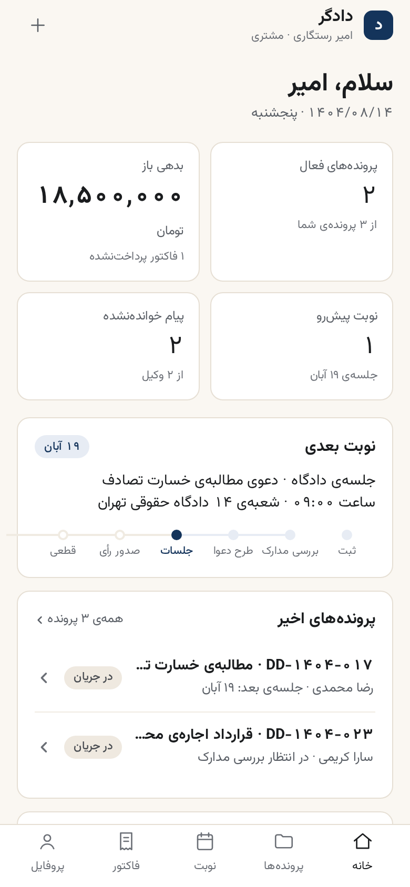

پاسخ به دو پرسش شما: «صفحهی خانه مخصوص چه کسی است؟» و «بهتر از این نمیشد؟». خانهی فعلی برای مشتری طراحی شده بود، اما چهرهاش این را نمیگفت — چهار کاشی عدد بزرگ، چهرهی نرمافزار حسابداری را داشت، نه همراهِ پروندهی حقوقی. در این بازنگری، مهمترین کار مشتری (جلسهی دادگاه و مسیر پرونده) قهرمانِ صفحه شد و اعداد حسابداری به یک ردیف آرام پایین صفحه رفتند.
| صفحه | صاحبش | کارِ آن صفحه |
|---|---|---|
| خانهی سایت (وب عمومی) | مشتریِ بالقوه — مراجعی که هنوز پرونده ندارد | اعتمادسازی و تبدیل به درخواست مشاوره؛ وکیل و ادمین هرگز مخاطبش نیستند |
| خانهی اپ موبایل (این صفحه) | مشتری واردشده (موکل) — مثل امیر | «الان کجای کارم است و چه کاری در پیش دارم؟» — جلسهی بعد، پیام وکیل، پول و سند |
| داشبورد وکیل | وکیل (رضا محمدی، سارا کریمی) | پشت ورودِ سایت وب — پروندههای باز، تقویم، پیشنهادها؛ در اپ موبایل فاز M1 نیست |
| داشبورد ادمین | مدیر موسسه | پشت ورودِ سایت وب — مدیریت کاربران، مالی، محتوا؛ در اپ موبایل فاز M1 نیست |

data.js است: ۵ روز تا جلسه (۱۴→۱۹ آبان)، بدهی ۱۸٬۵۰۰٬۰۰۰ از یک فاکتور پرداختنشده، ۲ پیام خواندهنشده، ۲ پرونده در جریان از ۳ پرونده.